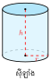
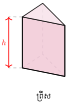
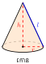
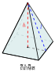
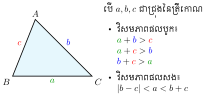

រកមិនឃើញរូបមន្តដែលត្រូវនឹងពាក្យនេះទេ។
មេរៀន ចំនួនសនិទាន
និយមន័យ៖ ចំនួនសនិទាន គឺជាចំនួនដែលអាចសរសេរជារាងប្រភាគ \(\displaystyle \frac{a}{b}\) ដែល \(\displaystyle a, b \in \mathbb{Z}\) (ចំនួនគត់រ៉ឺឡាទីប) និង \(\displaystyle b \neq 0\)។ ចំនួនសនិទានអាចជាចំនួនគត់ ឬទសភាគខួប។
ដ្យាក្រាមទំនាក់ទំនងសំណុំចំនួន៖
ការដៅចំណុចនៅលើបន្ទាត់ចំនួន៖
ប្រមាណវិធីលើចំនួនសនិទាន៖
- បូក និង ដក៖ ត្រូវតម្រូវភាគបែងរួម
\(\displaystyle \frac{a}{b} \pm \frac{c}{d} = \frac{ad \pm bc}{bd}\) - គុណ៖ \(\displaystyle \frac{a}{b} \times \frac{c}{d} = \frac{ac}{bd}\)
- ចែក៖ \(\displaystyle \frac{a}{b} \div \frac{c}{d} = \frac{a}{b} \times \frac{d}{c} = \frac{ad}{bc}\)
ចំណាំ
+ សញ្ញាប្រភាគ៖ \(\displaystyle \frac{-a}{b} = \frac{a}{-b} = -\frac{a}{b}\)
+ ចម្រាស់នៃ \(\displaystyle \frac{a}{b}\) គឺ \(\displaystyle \frac{b}{a}\)
+ ចំនួនផ្ទុយនៃ \(\displaystyle \frac{a}{b}\) គឺ \(\displaystyle -\frac{a}{b}\)
មេរៀន ស្វ័យគុណ
១. និយមន័យ និង វាក្យស័ព្ទ
ស្វ័យគុណ \(\displaystyle n\) នៃ \(\displaystyle a\) គឺជាផលគុណនៃកត្តា \(\displaystyle a\) ចំនួន \(\displaystyle n\) ដង។
២. រូបមន្តគ្រឹះ (\(\displaystyle a, b \neq 0\))
- ផលគុណ និងផលចែក (គោលដូចគ្នា)៖
\(\displaystyle a^m \times a^n = a^{m+n}\) និង \(\displaystyle \frac{a^m}{a^n} = a^{m-n}\) - ស្វ័យគុណនៃស្វ័យគុណ៖
\(\displaystyle (a^m)^n = a^{m \times n}\) - ស្វ័យគុណនៃផលគុណ និងផលចែក៖
\(\displaystyle (a \times b)^n = a^n \times b^n\) និង \(\displaystyle \left(\frac{a}{b}\right)^n = \frac{a^n}{b^n}\)
៣. ស្វ័យគុណជាប្រភាគ (រ៉ាឌីកាល់/ឫស)
- \(\displaystyle a^{\frac{1}{n}} = \sqrt[n]{a}\) (ឧ. \(\displaystyle 25^{\frac{1}{2}} = \sqrt{25} = 5\))
- \(\displaystyle a^{\frac{m}{n}} = \sqrt[n]{a^m} = (\sqrt[n]{a})^m\)
ករណីពិសេស និងការប្រុងប្រយ័ត្ន!
- \(\displaystyle a^0 = 1\) និង \(\displaystyle a^{-n} = \frac{1}{a^n}\)
- ប្រយ័ត្នទីតាំងសញ្ញាដក៖ \(\displaystyle \color{#ff0000} -3^2 \neq (-3)^2\)
\(\displaystyle -3^2 = -(3 \times 3) = -9\)
(និទស្សន្តមិនគ្របដណ្តប់សញ្ញាដក)
\(\displaystyle (-3)^2 = (-3) \times (-3) = 9\)
(និទស្សន្តគ្របដណ្តប់ទាំងសញ្ញាដក) - បើគោលអវិជ្ជមាន៖ និទស្សន្តគូ
\(\displaystyle \implies (+)\), និទស្សន្តសេស \(\displaystyle \implies (-)\)
៤. សមីការស្វ័យគុណ (Exponential Eqs)
បើគោលសងខាងដូចគ្នា គេអាចផ្ទឹមនិទស្សន្តបាន។
ទ្រឹស្តីបទ៖ បើ \(\displaystyle a^x = a^y\) នោះគេទាញបាន \(\displaystyle \color{#ff0000} x = y\) (លុះត្រាតែ \(\displaystyle a \neq -1, 0, 1\))។
ឧទាហរណ៍៖ \(\displaystyle 2^x = 8 \implies 2^x = 2^3 \implies x = 3\)។
៥. ទម្រង់ស្តង់ដា (ទម្រង់វិទ្យាសាស្ត្រ)
ការសរសេរចំនួនធំពេក ឬតូចពេក ជារាង \(\displaystyle A \times 10^n\)
ដែល \(\displaystyle 1 \le A < 10\) និង \(\displaystyle n\) ជាចំនួនគត់។
មេរៀន ទំហំសមាមាត្រ និងភាគរយ
សមាមាត្រ៖ ជាភាពស្មើគ្នានៃផលធៀបពីរ។ បើ \(\displaystyle \frac{a}{b} = \frac{c}{d}\) នោះគេបានផលគុណខ្វែង \(\displaystyle ad = bc\)។
បច្ចេកទេសទាញរកអញ្ញាត (Algebraic Manipulation)
សម្រាប់សមីការសមាមាត្រ \(\displaystyle \frac{a}{b} = \frac{c}{d}\) ៖
ផលគុណខ្វែង៖ យកភាគយកនៃភាគទី១ គុណនឹងភាគបែងនៃភាគទី២ ស្មើនឹងភាគយកនៃភាគទី២ គុណនឹងភាគបែងនៃភាគទី១។
\[ad = bc\]
ការទាញរកអញ្ញាត (ឧ. រក \(\displaystyle b\))៖
- ជំហានទី ១៖ រៀបចំសមីការឱ្យបាន \(\displaystyle bc = ad\) (ប្តូរអង្គ)
- ជំហានទី ២៖ ចែកអង្គទាំងពីរនឹង \(\displaystyle c\) ដើម្បីទុក \(\displaystyle b\) នៅម្នាក់ឯង៖ \(\displaystyle \frac{bc}{c} = \frac{ad}{c}\)
- លទ្ធផល៖ \(\displaystyle b = \frac{ad}{c}\)
១. ក្រាបសមាមាត្រត្រង់ (Direct Proportion)
ច្បាប់៖ នៅពេល \(\displaystyle x\) កើន \(\displaystyle k\) ដង \(\displaystyle y\) ក៏កើន \(\displaystyle k\) ដងដែរ (\(\displaystyle k\) ហៅថា មេគុណសមាមាត្រ)។
២. ភាគរយ និងផលប្រយោជន៍
- ភាគរយចំណេញ៖ \(\displaystyle \frac{\text{ប្រាក់ចំណេញ}\rule[-0.5em]{0pt}{1.55em}}{\text{ប្រាក់ដើម}\rule[-0.5em]{0pt}{1.55em}} \times 100\%\)
- ភាគរយខាត៖ \(\displaystyle \frac{\text{ប្រាក់ខាត}\rule[-0.5em]{0pt}{1.55em}}{\text{ប្រាក់ដើម}\rule[-0.5em]{0pt}{1.55em}} \times 100\%\)
- តម្លៃលក់ក្រោយបញ្ចុះ៖ \(\displaystyle \text{តម្លៃលក់} \times (1 - \text{អត្រាបញ្ចុះ})\)
៣. ការប្រាក់សាមញ្ញ (Simple Interest)
ររូបមន្ត៖ \(\displaystyle \color{#ff0000} I = P \times R \times T\)
- \(\displaystyle I\): ការប្រាក់ដែលទទួលបាន (Interest)
- \(\displaystyle P\): ប្រាក់ដើម (Principal)
- \(\displaystyle R\): អត្រាការប្រាក់គិតជាឆ្នាំ (Rate) - (ត្រូវប្តូរជាលេខទសភាគ ឧ. \(\displaystyle 5\% = 0.05\))
- \(\displaystyle T\): ពេលគិតជាឆ្នាំ (Time)
គន្លឹះដោះស្រាយការប្រាក់
ប្រសិនបើពេល (\(\displaystyle T\)) គិតជាខែ ត្រូវប្តូរទៅជាឆ្នាំដោយចែកនឹង ១២។
ឧ. \(\displaystyle 6\) ខែ \(\displaystyle = \frac{6}{12} = 0.5\) ឆ្នាំ។
មេរៀន រង្វាស់រង្វាល់
ល្បឿន ចម្ងាយ និង ពេល៖
ម៉ាសមាឌ៖ \(\displaystyle D = \frac{m}{V}\)
(\(\displaystyle D\): ម៉ាសមាឌ, \(\displaystyle m\): ម៉ាស, \(\displaystyle V\): មាឌ)
ទំនាក់ទំនងមាឌ និង ចំណុះ៖
\(\displaystyle 1 \text{ m}^3 = 1000 \text{ dm}^3 = 1000 \text{ L}\)
\(\displaystyle 1 \text{ dm}^3 = 1 \text{ L}\), \(\displaystyle 1 \text{ cm}^3 = 1 \text{ mL} = 1 \text{ cc}\)
មេរៀន កន្សោមពីជគណិត
១. ឯកលក្ខណៈភាពសំខាន់ៗ
ដឺក្រេទី ២៖
- \(\displaystyle (a+b)^2 = a^2 + 2ab + b^2\)
- \(\displaystyle (a-b)^2 = a^2 - 2ab + b^2\)
- \(\displaystyle a^2-b^2 = (a-b)(a+b)\)
ដឺក្រេទី ៣៖
- \(\displaystyle (a+b)^3 = a^3 + 3a^2b + 3ab^2 + b^3\)
- \(\displaystyle (a-b)^3 = a^3 - 3a^2b + 3ab^2 - b^3\)
- \(\displaystyle a^3+b^3 = (a+b)(a^2 - ab + b^2)\)
- \(\displaystyle a^3-b^3 = (a-b)(a^2 + ab + b^2)\)
២. ការបកស្រាយ \(\displaystyle a^2-b^2 = (a-b)(a+b)\) តាមធរណីមាត្រ
ការពន្យល់៖
- រូបទី១៖ ផ្ទៃសរុបមានរាងជាអក្សរ L (ពណ៌ខៀវ + បៃតង) គឺស្មើនឹងការ៉េធំ \(\displaystyle a^2\) ដកការ៉េតូច \(\displaystyle b^2\) ចេញ \(\displaystyle \implies\) ផ្ទៃដែលនៅសល់ \(\displaystyle = a^2 - b^2\)។
- រូបទី២៖ គេកាត់ផ្ទៃពណ៌បៃតងយកទៅផ្តុំពីលើផ្ទៃពណ៌ខៀវ បង្កើតបានជាចតុកោណកែងថ្មីមួយ។
- ចតុកោណកែងថ្មីនេះ មានបណ្តោយ \(\displaystyle (a+b)\) និង ទទឹង \(\displaystyle (a-b)\) \(\displaystyle \implies\) ផ្ទៃសរុប \(\displaystyle = (a-b)(a+b)\)។
- សន្និដ្ឋាន៖ ដោយសារផ្ទៃទាំងពីរជារូបតែមួយ គេទាញបាន \(\displaystyle \color{#ff0000} a^2 - b^2 = (a-b)(a+b)\)។
៣. វិធីសាស្ត្រដាក់ជាផលគុណកត្តា
- ចាប់កត្តារួម៖ \(\displaystyle ax + ay = a(x + y)\) (ឧ. \(\displaystyle 4x^2 - 6x = 2x(2x - 3)\))
- ប្រើឯកលក្ខណៈភាព៖ សង្កេតមើលរាងការ៉េ។ (ឧ. \(\displaystyle x^2 - 25 = x^2 - 5^2 = (x-5)(x+5)\))
- ផ្តុំតួ៖ ប្រើពេលមាន ៤ តួឡើងទៅ។ (ឧ. \(\displaystyle ax+ay+bx+by = a(x+y)+b(x+y) = (x+y)(a+b)\))
ការបំបែកតួកណ្តាល (ត្រីធា \(\displaystyle ax^2+bx+c\))
ត្រូវរកពីរចំនួន \(\displaystyle p\) និង \(\displaystyle q\) ដែល៖ ផលបូក \(\displaystyle p+q = b\) និង ផលគុណ \(\displaystyle p \times q = a \times c\)។
ឧទាហរណ៍៖ \(\displaystyle x^2 + 5x + 6\)
មាន \(\displaystyle p+q=5\) និង \(\displaystyle p \times q=6\) នោះទាញបាន \(\displaystyle p=2, q=3\)។
\(\displaystyle \implies x^2+5x+6 = (x+2)(x+3)\)។
មេរៀន កន្សោមសនិទាន
១. និយមន័យ និង លក្ខខណ្ឌមានន័យ
កន្សោមសនិទានជារាងប្រភាគ \(\displaystyle \frac{A}{B}\) ដែល \(\displaystyle A\) និង \(\displaystyle B\) ជាពហុធា។
លក្ខខណ្ឌមានន័យ៖ ភាគបែងត្រូវតែខុសពីសូន្យ (\(\displaystyle B \neq 0\))។
ឧទាហរណ៍៖ \(\displaystyle F = \frac{x+3}{x-2}\) មានន័យកាលណា \(\displaystyle x - 2 \neq 0 \implies x \neq 2\)។
២. ជំហានសម្រួលកន្សោមសនិទាន
៣. ប្រមាណវិធីលើកន្សោមសនិទាន
- វិធីបូក និងដក៖
- ភាគបែងដូចគ្នា៖ \(\displaystyle \frac{A}{D} \pm \frac{B}{D} = \frac{A \pm B}{D}\)
- ភាគបែងខុសគ្នា៖ ត្រូវតម្រូវភាគបែងរួម (រក LCM) មុននឹងបូកដកភាគយក។ - វិធីគុណ៖
គុណភាគយក និងភាគយក, ភាគបែង និងភាគបែង។
\(\displaystyle \frac{A}{B} \times \frac{C}{D} = \frac{A \times C}{B \times D}\) (គួរសម្រួលមុននឹងគុណបញ្ចូល) - វិធីចែក៖
ប្តូរការចែកទៅជាការគុណនឹងចម្រាស់នៃប្រភាគទី២។
\(\displaystyle \frac{A}{B} \div \frac{C}{D} = \frac{A}{B} \times \frac{D}{C}\) (ដែល \(\displaystyle C \neq 0\))
មេរៀន សមីការដឺក្រេទី១ មាន១អញ្ញាត
ទម្រង់ទូទៅ៖ \(\displaystyle ax + b = 0 \quad (a \neq 0)\) មានឫស \(\displaystyle x = -\frac{b}{a}\)។
វិធាននៃការដោះស្រាយ៖
បោះតួមានអញ្ញាតទៅអង្គទី១ និងតួលេខទៅអង្គទី២ ដោយ ត្រូវប្តូរសញ្ញាពេលឆ្លងកាត់សញ្ញាស្មើ (\(\displaystyle =\))។
ករណីពិសេស (ពេលអញ្ញាត \(\displaystyle x\) ស៊ីសងអស់)៖
- បើទាញបានទម្រង់ \(\displaystyle 0x = 0\) \(\displaystyle \implies\) សមីការមានឫសរាប់មិនអស់ (\(\displaystyle x \in \mathbb{R}\))។
- បើទាញបានទម្រង់ \(\displaystyle 0x = c\) (ដែល \(\displaystyle c \neq 0\)) \(\displaystyle \implies\) សមីការគ្មានឫសទេ។
វិធីសាស្ត្រដោះស្រាយចំណោទ (៤ជំហាន)៖
- ជ្រើសរើសអញ្ញាត៖ តាង \(\displaystyle x\) ជាអ្វីដែលប្រធានសួររក ព្រមទាំងដាក់លក្ខខណ្ឌខ្នាត។
- បង្កើតសមីការ៖ បកប្រែបម្រាប់ប្រធាន ទៅជាប្រយោគគណិតវិទ្យា។
- ដោះស្រាយសមីការ៖ រកតម្លៃ \(\displaystyle x\) តាមវិធានខាងលើ។
- ផ្ទៀងផ្ទាត់ និងឆ្លើយ៖ យកចម្លើយទៅផ្ទៀងផ្ទាត់លក្ខខណ្ឌ និងប្រធាន រួចសន្និដ្ឋាន។
មេរៀន វិសមីការដឺក្រេទី១ មាន១អញ្ញាត
ទម្រង់ទូទៅ៖ \(\displaystyle ax + b > 0\), \(\displaystyle ax + b < 0\), \(\displaystyle ax + b \geq 0\), \(\displaystyle ax + b \leq 0\) (ដែល \(\displaystyle a \neq 0\))។
ក្រាបតំណាងចម្លើយ និងការសរសេរជាចន្លោះ៖
ការប្រើប្រាស់វង់ក្រចក និងឃ្នាប៖
- សញ្ញា \(\displaystyle >\) ឬ \(\displaystyle <\) (ដាច់ខាត) \(\displaystyle \implies\) ប្រើវង់ក្រចក \(\displaystyle (\) និង \(\displaystyle )\) ឬឃ្នាបបែរចេញពីរលកចម្លើយ (មានន័យថាមិនយកតម្លៃត្រង់ចំណុចនោះទេ)។
- សញ្ញា \(\displaystyle \geq\) ឬ \(\displaystyle \leq\) (ឬស្មើ) \(\displaystyle \implies\) ប្រើឃ្នាប \(\displaystyle [\) និង \(\displaystyle ]\) បែរចូលតំបន់ចម្លើយ (មានន័យថាយកតម្លៃត្រង់ចំណុចនោះ)។
ប្រុងប្រយ័ត្នបំផុត
វិសមីការមានលក្ខណៈដូចសមីការដែរ (អាចបោះតួបូកដកបានធម្មតា) ប៉ុន្តែ៖
នៅពេលដែលអ្នក គុណ ឬចែក អង្គទាំងពីរនៃវិសមីការនឹង ចំនួនអវិជ្ជមាន (\(\displaystyle -_{ve}\)) អ្នកត្រូវតែ ប្តូរទិសដៅ វិសមភាពភ្លាមៗ។
ឧទាហរណ៍៖ \(\displaystyle -2x > 4\\ \implies x < \frac{4}{-2} \\ \implies \textbf{x < -2}\) (ដូរពី \(\displaystyle >\) ទៅ \(\displaystyle <\))
មេរៀន ប្លង់កូអរដោនេ និង ក្រាប
ប្រព័ន្ធកូអរដោនេអរតូណរមេ៖ ផ្សំឡើងដោយអ័ក្សកែងគ្នាពីរ គឺអ័ក្សដេក (អាប់ស៊ីស \(\displaystyle x'Ox\)) និងអ័ក្សឈរ (អរដោនេ \(\displaystyle y'Oy\)) កាត់គ្នាត្រង់គល់តម្រុយ \(\displaystyle O\)។
រូបមន្តសំខាន់ៗរវាងពីរចំណុច \(\displaystyle A\) និង \(\displaystyle B\)៖
ប្រវែង ឬចម្ងាយ \(\displaystyle AB\) (តាមទ្រឹស្តីបទពីតាហ្គ័រ)៖
\[d = \sqrt{(x_B - x_A)^2 + (y_B - y_A)^2}\]
កូអរដោនេចំណុចកណ្តាល \(\displaystyle I\) នៃអង្កត់ \(\displaystyle [AB]\)៖
\[I\left(\frac{x_A + x_B}{2} \,,\, \frac{y_A + y_B}{2}\right)\]
មេគុណប្រាប់ទិស (Slope) នៃបន្ទាត់ \(\displaystyle (AB)\)៖
\[a = \frac{y_B - y_A}{x_B - x_A} = \frac{\Delta y}{\Delta x}\]
មេរៀន ស្ថិតិ
រង្វាស់ទីតាំងកណ្តាល៖
- មធ្យម (\(\displaystyle \bar{x}\))៖ \(\displaystyle \bar{x} = \frac{\text{ផលបូកទិន្នន័យសរុប}\rule[-0.5em]{0pt}{1.55em}}{\text{ចំនួនទិន្នន័យ (n)}\rule[-0.5em]{0pt}{1.55em}}\)
- មេដ្យាន (\(\displaystyle Me\))៖ ជាតម្លៃដែលនៅចំកណ្តាលគេ បន្ទាប់ពីរៀបទិន្នន័យតាមលំដាប់។
SD + ទីតាំងមេដ្យាន \(\displaystyle = \frac{n+1}{2}\)
+ បើ \(\displaystyle n\) សេស៖ \(\displaystyle Me\) គឺតួទី \(\displaystyle \frac{n+1}{2}\)។
+ បើ \(\displaystyle n\) គូ៖ \(\displaystyle Me\) ជាមធ្យមនៃពីរតួកណ្តាល។ - ម៉ូត (\(\displaystyle Mo\))៖ ជាតម្លៃទិន្នន័យដែលមានប្រេកង់ខ្ពស់ជាងគេ (អាចមានមួយ ច្រើន ឬគ្មានម៉ូត)។
ក្រាបសសរ៖ បង្ហាញទិន្នន័យដាច់ៗពីគ្នា។
អ៊ីស្តូក្រាម៖ បង្ហាញទិន្នន័យជាប់គ្នាជាថ្នាក់។
ក្រាបផ្លិត (តំណាងទិន្នន័យជាភាគរយ)៖
មុំផ្ចិតនៃក្រាបផ្លិត៖ \(\displaystyle \text{មុំ} = \text{ប្រេកង់រ៉ឺឡាទីប} \times 360^\circ\) ឬ \(\displaystyle = \text{ភាគរយ} \times 3.6^\circ\)។
មេរៀន ប្រូបាប
ប្រូបាបនៃព្រឹត្តិការណ៍ \(\displaystyle A\)៖
\(\displaystyle P(A) = \frac{n(A)}{n(S)} = \frac{\text{ករណីស្រប}\rule[-0.5em]{0pt}{1.55em}}{\text{ករណីអាច}\rule[-0.5em]{0pt}{1.55em}}\)
(\(\displaystyle n(S)\) គឺជាចំនួនធាតុនៃលំហសំណាកសរុប)
ឧទាហរណ៍ កងវិល (Spinner)៖
ក្នុងកងវិលនេះ៖ លំហសំណាកមាន ៤ ចំណែក។
\(\displaystyle P(A) = \frac{2}{4} = \frac{1}{2}\), \(\displaystyle P(B) = \frac{1}{4}\), \(\displaystyle P(C) = \frac{1}{4}\)។
លក្ខណៈគ្រឹះ៖
- \(\displaystyle 0 \leq P(A) \leq 1\) (មិនអាចតូចជាង 0 ឬធំជាង 1)
- ព្រឹត្តិការណ៍ប្រាកដ \(\displaystyle P(A) = 1\)
- ព្រឹត្តិការណ៍មិនអាច \(\displaystyle P(A) = 0\)
- ព្រឹត្តិការណ៍ផ្ទុយ \(\displaystyle \bar{A}\) គឺ \(\displaystyle P(\bar{A}) = 1 - P(A)\)
មេរៀន ទ្រឹស្តីបទពីតាគ័រ
ទ្រឹស្តីបទពីតាករ៖ ក្នុងត្រីកោណកែង ការ៉េនៃរង្វាស់អ៊ីប៉ូតេនុស ស្មើនឹងផលបូកការ៉េនៃរង្វាស់ជ្រុងមុំកែង។
រូបមន្ត៖ \(\displaystyle a^2 = b^2 + c^2\) \(\displaystyle \Rightarrow a = \sqrt{b^2+c^2}\)
ច្រាសទ្រឹស្តីបទពីតាករ៖ បើ \(\displaystyle a^2 = b^2 + c^2\) នោះត្រីកោណនោះជា ត្រីកោណកែង។
ចំនួនពីតាករញឹកញាប់៖ (3, 4, 5), (5, 12, 13), (6, 8, 10), (8, 15, 17)។
មេរៀន ការប្រៀបធៀបត្រីកោណ
ពីរត្រីកោណប៉ុនគ្នា (\(\displaystyle \cong\)) កាលណាវាមានជ្រុងត្រូវគ្នា និងមុំត្រូវគ្នាប៉ុនគ្នា។ គេចែកករណីប៉ុនគ្នាជា ២ ផ្នែក៖
ចំណាំ៖ ត្រីកោណដូចគ្នា (\(\displaystyle \sim\))
មិនត្រូវច្រឡំនឹងត្រីកោណដូចគ្នាទេ! ត្រីកោណដូចគ្នាគឺមានរាងដូចគ្នា តែទំហំអាចខុសគ្នា។ ករណីដូចគ្នាមាន៖ ម.ម (មុំ-មុំ), ជ.ម.ជ (ជ្រុងសមាមាត្រ និងមុំមួយប៉ុនគ្នា), និង ជ.ជ.ជ (ជ្រុងទាំង៣ សមាមាត្រគ្នា)។
មេរៀន ចតុកោណ
និយមន័យ៖ ជាពហុកោណដែលមានជ្រុងបួន និងមុំបួន។ យើងចែកប្រភេទចតុកោណតាមលក្ខណៈស្របនៃជ្រុងរបស់វា៖
១. ប្រលេឡូក្រាម (Parallelogram)
និយមន័យ៖ ជាចតុកោណដែលមានជ្រុងឈមស្របគ្នាពីរគូ។
លក្ខណៈ៖
- ជ្រុងឈមស្របគ្នា (\(\displaystyle AD \parallel BC, AB \parallel DC\)) និងប៉ុនគ្នា (\(\displaystyle AD = BC, AB = DC\))។
- មុំឈមប៉ុនគ្នា (\(\displaystyle \angle A = \angle C, \angle B = \angle D\))។
- មុំជាប់គ្នាមានផលបូក \(\displaystyle 180^\circ\) (\(\displaystyle \angle A + \angle B = 180^\circ\), ជាដើម)។
- អង្កត់ទ្រូងទាំងពីរកាត់ពុះគ្នាត្រង់ចំណុចកណ្តាល (\(\displaystyle AO=CO, BO=DO\))។
២. ចតុកោណកែង (Rectangle)
និយមន័យ៖ ជាប្រលេឡូក្រាមដែលមានមុំកែង។
លក្ខណៈ៖ មានមុំទាំងបួនជាមុំកែង និង អង្កត់ទ្រូងទាំងពីរមានប្រវែងប៉ុនគ្នា (\(\displaystyle AC=BD\) និង \(\displaystyle AO=BO=CO=DO\))។
៣. ចតុកោណស្មើ (Rhombus)
និយមន័យ៖ ជាប្រលេឡូក្រាមដែលមានជ្រុងទាំងបួនប៉ុនគ្នា។
លក្ខណៈ៖ មានជ្រុងទាំងបួនប៉ុនគ្នា (\(\displaystyle AB=BC=CD=DA\)) អង្កត់ទ្រូងទាំងពីរកែងគ្នា (\(\displaystyle AC \perp BD\)) និងកាត់ពុះមុំ។
៤. ការេ (Square)
និយមន័យ៖ ជាចតុកោណដែលមានជ្រុងទាំងបួនប៉ុនគ្នា និងមុំទាំងបួនជាមុំកែង។ (វាមានលក្ខណៈជាចតុកោណកែង និងស្មើ)
លក្ខណៈ៖ មានគ្រប់លក្ខណៈនៃចតុកោណកែង និងចតុកោណស្មើ។ (ជ្រុងប៉ុនគ្នា, មុំកែង, អង្កត់ទ្រូងកែងគ្នា និង ប៉ុនគ្នា \(\displaystyle AC=BD\) និង \(\displaystyle AO=BO=CO=DO\))។
៥. ចតុកោណព្នាយ (Trapezoid)
និយមន័យ៖ ជាចតុកោណដែលមានជ្រុងឈមពីរស្របគ្នា (ហៅថាបាត)។
លក្ខណៈ៖ មានជ្រុងពីរស្របគ្នា (\(\displaystyle AB \parallel DC\))។ មុំនៅបាតទាំងពីរស្របគ្នា \(\displaystyle \angle A + \angle D = 180^\circ\), \(\displaystyle \angle B + \angle C = 180^\circ\)។ (ចតុកោណព្នាយសមបាតមានមុំបាតប៉ុនគ្នា \(\displaystyle \angle A = \angle B\), \(\displaystyle \angle C = \angle D\) និងអង្កត់ទ្រូងប៉ុនគ្នា \(\displaystyle AC=BD\))។
មេរៀន ផ្ទៃក្រឡាពហុកោណ
២. ចតុកោណកែង និង ប្រលេឡូក្រាម
៣. ចតុកោណស្មើ និង ចតុកោណព្នាយ
បរិមាត្រ (Perimeter)
បើចង់រក បរិមាត្រ នៃពហុកោណណាមួយ អ្នកគ្រាន់តែយកប្រវែងជ្រុងទាំងអស់នៅជុំវិញខាងក្រៅ បូកបញ្ចូលគ្នាជាការស្រេច។
មេរៀន រង្វង់
រង្វង់ \(\displaystyle C(O, R)\)៖ ជាសំណុំចំណុចនៅក្នុងប្លង់ ដែលមានចម្ងាយស្មើៗគ្នា \(\displaystyle R\) (កាំ) ពីចំណុចនឹងមួយ \(\displaystyle O\) (ផ្ចិត)។
១. រូបមន្តគ្រឹះ និង ផ្នែកផ្សេងៗនៃរង្វង់
- អង្កត់ផ្ចិត (Diameter)៖ \(\displaystyle D = 2R\)
- បរិមាត្រ (Circumference)៖ \(\displaystyle C = 2\pi R = \pi D\)
- ផ្ទៃក្រឡា (Area)៖ \(\displaystyle S = \pi R^2\) (\(\displaystyle \pi \approx 3.14\) ឬ \(\displaystyle \frac{22}{7}\))
២. ចម្រៀករង្វង់ និង ប្រវែងធ្នូ
បើមុំផ្ចិត \(\displaystyle \alpha\) គិតជាដឺក្រេ (\(\displaystyle ^\circ\)) នោះគេបាន៖
- ប្រវែងធ្នូ \(\displaystyle L\)៖ \(\displaystyle L = \frac{\pi R \alpha}{180^\circ}\)
- ផ្ទៃក្រឡាចម្រៀករង្វង់៖ \(\displaystyle S_{\text{ចម្រៀក}} = \frac{\pi R^2 \alpha}{360^\circ}\)
- តាមចំណុច \(\displaystyle A\) មួយ៖ គេអាចគូសបានរង្វង់ច្រើនរាប់មិនអស់។ ផ្ចិតនៃរង្វង់ទាំងនេះស្ថិតនៅក្នុងប្លង់នៃរូបរបស់វា។
- តាមពីរចំណុច \(\displaystyle A\) និង \(\displaystyle B\)៖ គេអាចគូសបានរង្វង់ច្រើនរាប់មិនអស់។ ផ្ចិតនៃរង្វង់ទាំងនេះស្ថិតនៅលើ មេដ្យាទ័រ នៃអង្កត់ \(\displaystyle AB\)។
៤. លក្ខណៈមុំផ្ចិត និង ធ្នូ
មុំផ្ចិត៖ ជាមុំដែលមានកំពូលនៅត្រង់ផ្ចិត \(\displaystyle O\) នៃរង្វង់។
មេរៀន បន្ទាត់ពិសេសក្នុងត្រីកោណ
ក្នុងត្រីកោណមានបន្ទាត់ពិសេសចំនួន ៤ ប្រភេទ ដែលបន្ទាត់នីមួយៗមានតួនាទី លក្ខណៈ និងចំណុចប្រសព្វ (Intersection) ខុសៗគ្នាទាំងស្រុង៖
- និយមន័យ៖ ភ្ជាប់ពីកំពូលទៅចំណុចកណ្តាលនៃជ្រុងឈម។
- ចំណុចប្រសព្វ៖ ហៅថា ទីប្រជុំទម្ងន់ (\(\displaystyle G\)) (Centroid) ដែលជាផ្ចិតទម្ងន់នៃត្រីកោណ។
- លក្ខណៈពិសេស៖ មេដ្យានចែកត្រីកោណជាពីរមានផ្ទៃក្រឡាប៉ុនគ្នា។ ទំនាក់ទំនងប្រវែង៖ \(\displaystyle AG = \frac{2}{3}AM\)។
- និយមន័យ៖ គូសចេញពីកំពូលកែងទៅនឹងជ្រុងឈម (ឬបន្លាយជ្រុងឈម)។
- ចំណុចប្រសព្វ៖ ហៅថា អរតូសង់ (\(\displaystyle H\)) (Orthocenter)។
- លក្ខណៈពិសេស៖ ប្រើសម្រាប់គណនាផ្ទៃក្រឡាត្រីកោណ \(\displaystyle S = \frac{1}{2}bh\)។
៣. ពុះមុំ (Angle Bisector)
- និយមន័យ៖ បន្ទាត់ដែលពុះមុំក្នុងនៃត្រីកោណជាពីរមុំប៉ុនៗគ្នា។
- ចំណុចប្រសព្វ៖ ហៅថា ផ្ចិតរង្វង់ចារឹកក្នុង (\(\displaystyle I\)) ។
- លក្ខណៈពិសេស៖ ចំណុច \(\displaystyle I\) មានចម្ងាយស្មើគ្នាទៅនឹងជ្រុងទាំងបីនៃត្រីកោណ (\(\displaystyle r = \text{កាំរង្វង់ចារឹកក្នុង}\))។
៤. មេដ្យាទ័រ (Perp. Bisector)
- និយមន័យ៖ បន្ទាត់កែងនឹងជ្រុងត្រង់ចំណុចកណ្តាលនៃជ្រុងនោះ។
- ចំណុចប្រសព្វ៖ ហៅថា ផ្ចិតរង្វង់ចារឹកក្រៅ (\(\displaystyle O\)) ។
- លក្ខណៈពិសេស៖ ចំណុច \(\displaystyle O\) មានចម្ងាយស្មើគ្នាទៅនឹងកំពូលទាំងបីនៃត្រីកោណ
(\(\displaystyle OA=OB=OC=R\))។
មេរៀន រូបធរណីមាត្រវិមាត្របី
១. ព្រីស និង ស៊ីឡាំង
លក្ខណៈរួម៖ មានបាតពីរស្របគ្នា និងប៉ុនគ្នា។ កម្ពស់ \(\displaystyle h\) ជាចម្ងាយរវាងបាតទាំងពីរ។


រូបមន្តទូទៅ (ស៊ីឡាំង & ព្រីស)៖
តាង \(\displaystyle S_{\text{បាត}}\) ជាផ្ទៃក្រឡាបាត និង \(\displaystyle P_{\text{បាត}}\) ជាបរិមាត្របាត៖
- មាឌ៖ \(\displaystyle \color{#0000ff} V = S_{\text{បាត}} \times h\)
- ផ្ទៃខាង៖ \(\displaystyle \color{#0000ff} S_{\text{ខាង}} = P_{\text{បាត}} \times h\)
- ផ្ទៃសរុប៖ \(\displaystyle \color{#0000ff} S_{\text{សរុប}} = S_{\text{ខាង}} + 2S_{\text{បាត}}\)
២. កោន និង ពីរ៉ាមីត
លក្ខណៈរួម៖ មានបាតតែមួយ និងកំពូលស្រួចមួយ។


រូបមន្តទូទៅ (កោន & ពីរ៉ាមីត)៖
- មាឌ៖ \(\displaystyle \color{#0000ff} V = \frac{1}{3} S_{\text{បាត}} \times h\)
- ផ្ទៃខាង៖ \(\displaystyle \color{#0000ff} S_{\text{ខាង}} = \frac{1}{2} P_{\text{បាត}} \times l\)
- ផ្ទៃសរុប៖ \(\displaystyle \color{#0000ff} S_{\text{សរុប}} = S_{\text{ខាង}} + S_{\text{បាត}}\)
បញ្ជាក់៖ \(\displaystyle l\) ហៅថា ជនេត្រ សម្រាប់កោន និងហៅថា អូប៉ូតែម សម្រាប់ពីរ៉ាមីត។
មាឌ៖ \(\displaystyle \color{#0000ff} V = \frac{4}{3} \pi R^3\) | ផ្ទៃសរុប៖ \(\displaystyle \color{#0000ff} S = 4 \pi R^2\)
រំលឹកផ្ទៃក្រឡាបាត (\(\displaystyle S_{\text{បាត}}\)) និង ការប្តូរឯកតា
- រង្វង់ (បាតស៊ីឡាំង/កោន)៖ \(\displaystyle S = \pi r^2\) និង បរិមាត្រ \(\displaystyle P = 2\pi r\)
- ការ៉េ៖ \(\displaystyle S = a^2\) | ចតុកោណកែង៖ \(\displaystyle S = \text{បណ្តោយ} \times \text{ទទឹង}\)
- ត្រីកោណ៖ \(\displaystyle S = \frac{1}{2} \times \text{បាត} \times \text{កម្ពស់}\)
ឯកតាមាឌចំណុះ៖ \(\displaystyle 1\,\text{dm}^3 = 1\,\text{លីត្រ}\) , \(\displaystyle 1\,\text{m}^3 = 1000\,\text{លីត្រ}\) , \(\displaystyle 1\,\text{cm}^3 = 1\,\text{mL}\)។
មេរៀន មាត្រដ្ឋាន
និយមន័យ៖ មាត្រដ្ឋាន (\(\displaystyle S\)) ជាផលធៀបរវាងប្រវែងនៅលើប្លង់ ឬគំនូសផែនទី (\(\displaystyle d\)) និងប្រវែងពិតប្រាកដ (\(\displaystyle D\)) ដោយប្រវែងទាំងពីរត្រូវគិតជា ឯកតាដូចគ្នា។
រូបមន្ត៖
\[\text{មាត្រដ្ឋាន} = \frac{\text{ប្រវែងលើប្លង់}\rule[-0.5em]{0pt}{1.55em}}{\text{ប្រវែងពិត}\rule[-0.5em]{0pt}{1.55em}} \implies \color{#0000ff} S = \frac{d}{D}\]
គន្លឹះឯកតា និងការទាញរូបមន្ត
១. ការប្តូរឯកតា៖ ជាទូទៅ គេទម្លាប់ប្តូរឯកតាទៅជាសង់ទីម៉ែត្រ (\(\displaystyle \text{cm}\)) ជានិច្ច មុននឹងគណនាមាត្រដ្ឋាន។ អ្នកត្រូវចាំថា៖
\(\displaystyle \bullet\) \(\displaystyle 1\text{km} = 1,000\text{m} = 100,000\text{cm}\)
\(\displaystyle \bullet\) \(\displaystyle 1\text{m} = 100\text{cm}\)
២. ការទាញរកប្រវែងផ្សេងទៀត៖
- ចង់រកប្រវែងលើប្លង់ ៖ \(\displaystyle d = S \times D\)
- ចង់រកប្រវែងពិត ៖ \(\displaystyle D = \frac{d}{S}\)
ឧទាហរណ៍អនុវត្តន៍៖
ចម្ងាយលើផែនទីពីផ្ទះទៅសាលារៀនគឺ \(\displaystyle d = 1\text{cm}\) ដែលវាតំណាងឱ្យចម្ងាយពិតប្រាកដ \(\displaystyle D = 5\text{km}\)។ ចូររកមាត្រដ្ឋាននៃផែនទីនេះ។
ដំណោះស្រាយ៖
- ជំហានទី១៖ ប្តូរឯកតាជាមុនសិន
\(\displaystyle D = 5\text{km} = 5 \times 100,000\text{cm} = 500,000\text{cm}\)
- ជំហានទី២៖ គណនាផលធៀប
\(\displaystyle \text{មាត្រដ្ឋាន } S = \frac{d}{D} = \frac{1\text{cm}}{500,000\text{cm}} = \frac{1}{500,000}\)
- ចម្លើយ៖ គេច្រើនសរសេរមាត្រដ្ឋានជារាងផលធៀប \(\displaystyle 1 : 500,000\)។
មេរៀន បន្ទាត់ស្រប និងខ្សែកាត់
នៅពេលបន្ទាត់ស្របពីរ (\(\displaystyle L_1 \parallel L_2\)) ត្រូវកាត់ដោយបន្ទាត់ទី៣ (\(\displaystyle T\)) ហៅថាខ្សែកាត់ វានឹងបង្កើតបានមុំ ៨ ដែលមានលក្ខណៈពិសេសដូចខាងក្រោម៖
លក្ខណៈនៃគូមុំនីមួយៗ៖
- មុំទល់កំពូល (ប៉ុនគ្នា)៖
\(\displaystyle \angle 1 = \angle 3, \angle 2 = \angle 4 \dots\) - មុំឆ្លាស់ក្នុង (ប៉ុនគ្នា)៖
\(\displaystyle \angle 3 = \angle 5\) និង \(\displaystyle \angle 4 = \angle 6\) - មុំឆ្លាស់ក្រៅ (ប៉ុនគ្នា)៖
\(\displaystyle \angle 1 = \angle 7\) និង \(\displaystyle \angle 2 = \angle 8\) - មុំត្រូវគ្នា (ប៉ុនគ្នា)៖
\(\displaystyle \angle 1 = \angle 5, \angle 2 = \angle 6, \angle 3 = \angle 7, \angle 4 = \angle 8\) - មុំក្នុងរួមខាង (ផលបូក \(\displaystyle 180^\circ\))៖
\(\displaystyle \angle 3 + \angle 6 = 180^\circ\) និង \(\displaystyle \angle 4 + \angle 5 = 180^\circ\)
មេរៀន ការបំលែងរូបក្នុងប្លង់
១. បំលែងឆ្លុះ(Reflection)៖
ចំណុច \(\displaystyle M(x, y)\) ឆ្លុះធៀបនឹង៖
- អ័ក្ស \(\displaystyle Ox\) ៖ បានរូបភាព \(\displaystyle M'(x, -y)\)
- អ័ក្ស \(\displaystyle Oy\) ៖ បានរូបភាព \(\displaystyle M'(-x, y)\)
- គល់តម្រុយ \(\displaystyle O\) ៖ បានរូបភាព \(\displaystyle M'(-x, -y)\)
២. បំលែងកិល (Translation)៖
ការរំកិលចំណុច \(\displaystyle A(x, y)\) តាមវ៉ិចទ័រ \(\displaystyle \vec{u}(a, b)\) ទៅជាចំណុចថ្មី \(\displaystyle A'\) កំណត់ដោយ៖
\[A'(x + a \,,\, y + b)\]
មេរៀន ពហុកោណ
ពហុកោណ គឺជាខ្សែបិទជិតដែលមានជ្រុងជាអង្កត់។ បើពហុកោណមាន \(\displaystyle n\) ជ្រុង នោះវាមាន \(\displaystyle n\) កំពូល និង \(\displaystyle n\) មុំ។
រូបមន្តសំខាន់ៗ (សម្រាប់ពហុកោណប៉ោង \(\displaystyle n\) ជ្រុង)៖
- ផលបូករង្វាស់មុំក្នុង៖ \(\displaystyle \color{#0000ff} S_i = (n-2) \times 180^\circ\)
- ផលបូករង្វាស់មុំក្រៅ៖ \(\displaystyle \color{#0000ff} S_e = 360^\circ\)
- ចំនួនអង្កត់ទ្រូងសរុប៖ \(\displaystyle \color{#0000ff} d = \frac{n(n-3)}{2}\)
ពហុកោណនិយ័ត (Regular Polygon)៖ ជាពហុកោណដែលមានជ្រុងទាំងអស់ប៉ុនគ្នា និងមុំទាំងអស់ប៉ុនគ្នា។
- រង្វាស់មុំក្នុងមួយ៖ \(\displaystyle \color{#0000ff} i = \frac{(n-2) \times 180^\circ}{n}\)
- រង្វាស់មុំក្រៅមួយ៖ \(\displaystyle \color{#0000ff} e = \frac{360^\circ}{n}\)
មេរៀន វិសមភាពត្រីកោណ
ទ្រឹស្តីបទ៖ ក្នុងត្រីកោណមួយ ផលបូករង្វាស់ជ្រុងពីរ ត្រូវតែធំជាងរង្វាស់ជ្រុងទីបីជានិច្ច។ ម្យ៉ាងទៀត ផលសងរង្វាស់ជ្រុងពីរ ត្រូវតូចជាងជ្រុងទីបីជានិច្ច។
